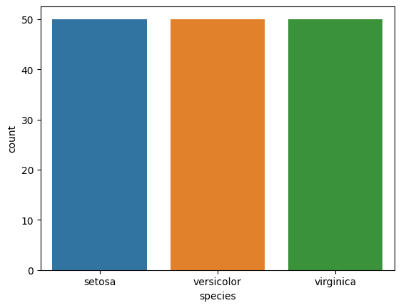
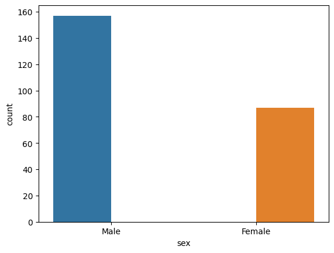
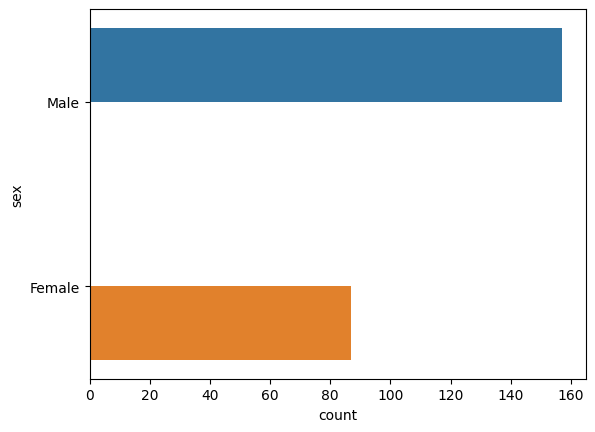
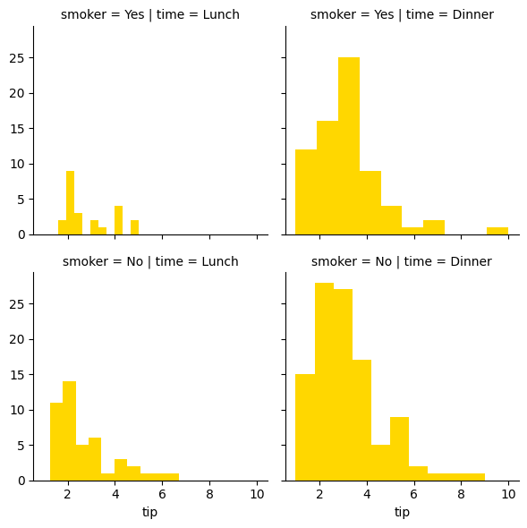
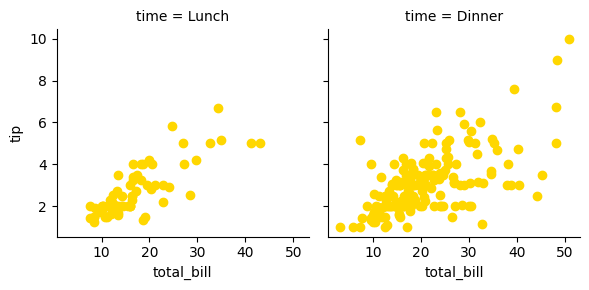
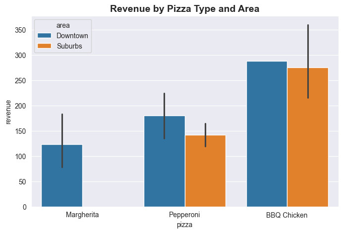
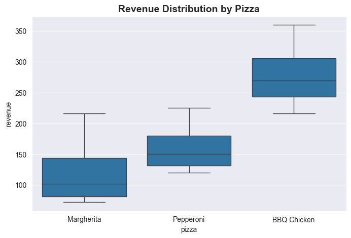
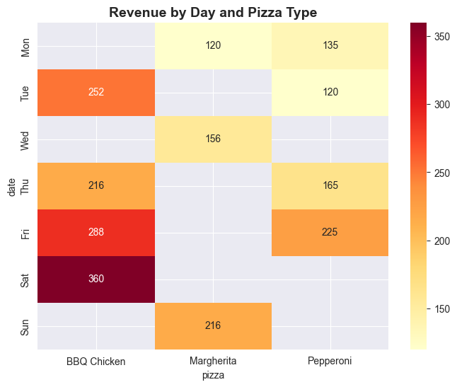

Arjun wanted to compare the distribution of tips across four days.
In Matplotlib that meant filtering the data four times, drawing four histograms, aligning the axes and building the legend by hand — about twenty-five lines.
Most of that code was bookkeeping, not thinking.
Seaborn does it in one: sns.boxplot(data=tips, x='day', y='tip'). It understands DataFrames, so grouping, colouring and the legend come for free.
🔑 The one idea
Seaborn takes a whole DataFrame and a column name, and does the grouping and styling for you.
Curriculum module: M02 - Data Visualization with Python Status: 🟡 Learning
Seaborn is a statistical plotting layer built on top of Matplotlib. You hand it a
Pandas DataFrame and the names of columns; it does the grouping, runs the
statistics, picks the colours, builds the legend, and returns a Matplotlib
Axes. Matplotlib draws exactly the numbers you pass it — seaborn computes
first, then draws.
The full tour: relational, distribution, categorical, regression, grid, and styling plots. All explanation lives in this notebook, in the Markdown cells above each group of code cells.
You name columns, not numbers. hue is a GROUP BY whose output channel is
colour. Learn that shape once and the plot name becomes the only thing that
changes.
Covered so far
lineplot, scatterplot, the hue / size / style semantic channels,
histplot and kdeplot, pairplot, violinplot, countplot, barplot,
boxplot, stripplot, swarmplot, regplot, FacetGrid with .map,
set_theme styles, and set_palette. Also the seaborn 0.13 rules that changed:
palette now requires hue, and dodge=False is needed when hue merely
repeats x.
Not covered yet: the figure-level wrappers (relplot, displot, catplot,
lmplot), heatmap and correlation matrices, jointplot, building custom
palettes with color_palette, and saving figures to file. The instructor module
also includes Plotly, now started in 06_plotly/.
Version note
Written against seaborn 0.13.2. Two behaviours changed in 0.13 and older
tutorials will mislead you:
Rule
Consequence
palette= is ignored without hue=
a palette with no hue gives one colour, not many
dodge="auto" still splits when hue repeats x
bars land off-centre at a fraction of width unless you pass dodge=False
Both are demonstrated with measured numbers in the notebook.
Key takeaway
If you remember only one thing: seaborn plots columns, not numbers — and it
runs statistics on them before drawing. A bar is a mean, a shaded band is a
confidence interval, and lineplot aggregates rows that share an x. Know what
has been computed before you trust the picture.
📘 Instructor Curriculum — M02, Data Visualization with Python
What this notebook is: a hands-on tour of seaborn, covering relational plots
(lineplot, scatterplot), distribution plots (histplot, kdeplot), categorical
plots (barplot, boxplot, violinplot, countplot, stripplot, swarmplot),
regression (regplot), grids (pairplot, FacetGrid), and global styling
(set_theme, set_palette).
How to read it: like the Matplotlib notebook, this is a ladder. Most cells repeat
the cell above and change exactly one argument. The useful question at each step is
what is different from the cell before? Each Markdown section explains every code cell
that follows it, up to the next section.
Versions used here: seaborn 0.13.2, matplotlib 3.10.9.
The mental model — read this first
Seaborn does not replace matplotlib. It sits on top of it and writes matplotlib code
for you:
your call seaborn's job matplotlib's job
--------- ------------- ----------------
sns.barplot( 1. group the rows draw rectangles
x="day", 2. run statistics (mean) draw error bars
y="total_bill", 3. pick colors from a palette draw ticks, labels
data=tips) 4. build the legend return an Axes
|
v
matplotlib Axes <-- you can still style this by hand
That layering explains three things you will see all over this notebook:
Every plot returns a matplotlib Axes, so plt.show(), plt.title() and friends
still work.
Seaborn arguments are about data (x="day", hue="sex"), not about pixels.
When seaborn cannot do something, you drop down to matplotlib — that is normal, not
a workaround.
The one contract seaborn expects: long-form data
WIDE form (what a spreadsheet looks like) LONG form (what seaborn wants)
+--------+--------+ +---------+--------------+
| setosa | virgin | | species | sepal_length |
+--------+--------+ +---------+--------------+
| 5.1 | 6.3 | | setosa | 5.1 |
| 4.9 | 5.8 | | setosa | 4.9 |
+--------+--------+ | virgin | 6.3 |
| virgin | 5.8 |
+---------+--------------+
^ ^
a grouping a measurement
column column
In long form, every column is a variable and every row is one observation. That is
why almost every call in this notebook looks the same shape:
💡 Engineering Extension — Recommended Extension - Not part of instructor curriculum.
Long form is the same idea as a normalized table versus a pivoted report. Seaborn
is the reporting layer: give it normalized rows and tell it which column plays which
role, and it does the GROUP BY and the aggregation itself. hue="species" is
literally a GROUP BY species whose output channel happens to be colour instead of a
result set.
Figure-level vs axes-level — the split that confuses everyone
Practical consequence: a figure-level call ignores a figure you made earlier and
cannot be placed inside a subplot. That is why pairplot in this notebook always lands
on its own canvas.
1. Setup — the import cells
Cell
Why it exists
import seaborn as sns
The whole plotting API lives at the top level — unlike matplotlib, there is no second submodule import. The alias sns is universal convention.
import numpy as np
The first two plots feed seaborn raw NumPy arrays.
import pandas as pd
Seaborn is built around the pandas DataFrame. Every dataset below is one.
print(sns.__version__)
Prints 0.13.2. Checking this first is not ceremony — 0.13 changed real behaviour, most notably that palette= now requires hue=. Snippets written for 0.11 or 0.12 will warn or fail here.
Takeaway:import seaborn as sns is the entire import. But seaborn without pandas is
half a tool — the DataFrame is the interface.
codecell 1
import seaborn as sns
import numpy as np
import pandas as pd
codecell 2
print(sns.__version__)
Output
0.13.2
2. Your first plots — arrays vs DataFrame
The next three cells build the same straight line twice, through two different doors.
x = np.array([1,2,3,4,5,6,7,8,9,10])
y = np.array([2,4,6,8,10,12,14,16,18,20])
y is exactly 2 * x. Deliberately boring data: when the numbers are predictable, every
visual change you see comes from the argument, not the data. Same experiment design
as the Matplotlib notebook.
Cell
Call
What it teaches
Setup
the two np.array lines
Plain arrays, no DataFrame yet.
A
sns.lineplot(x=x, y=y)
Seaborn accepts raw arrays positionally by keyword. No data= needed.
B
sns.lineplot(x='x', y='y', data=df)
The normal seaborn style: x and y are now strings naming columns, and data= supplies the frame.
Look at the two charts — they are identical. So why prefer B?
A: x=<array> -> seaborn gets numbers. Axis label: none (it has no name)
B: x='x' -> seaborn gets a NAME. Axis label: "x" (taken from the column)
That is the real difference and it scales: with data=, seaborn can auto-label axes,
build legends, and group by other columns, because it knows what the numbers are
called. With bare arrays it only has numbers.
Common mistake: writing sns.lineplot(x, y) positionally. In seaborn 0.13 the first
positional parameter is data, so this raises an error. Always use keywords.
Takeaway: raw arrays work for a throwaway plot. Pass data= plus column names for
everything else — the extra features all depend on seaborn knowing the column names.
codecell 4
x = np.array([1,2,3,4,5,6,7,8,9,10])
y = np.array([2,4,6,8,10,12,14,16,18,20])
codecell 5
x = np.array([1,2,3,4,5,6,7,8,9,10])
y = np.array([2,4,6,8,10,12,14,16,18,20])
sns.lineplot(x=x,y=y)
sns.load_dataset("iris") downloads a small, well-known CSV from the seaborn-data
repository and returns it as a DataFrame. Three datasets are used in this notebook:
Dataset
Shape (verified)
Used for
iris
150 rows × 5 cols (4 numeric + species)
relational and distribution plots
titanic
891 rows × 15 cols
barplot
tips
244 rows × 7 cols
categorical plots, facets, regression
The iris frame is perfectly balanced — 50 rows per species (setosa, versicolor,
virginica). That matters later: countplot on species will show three bars of
exactly equal height, which is a check that the plot is doing what you think.
print(data) truncates the middle rows and shows [150 rows x 5 columns] at the bottom.
That row/column count is the fastest sanity check you have before plotting anything.
Note
⚠️ These datasets need network access on first use. They are convenience data for
learning. Real work reads local files with a relative path.
Takeaway:load_dataset gives you a clean long-form DataFrame instantly, so you can
practise the plotting API without spending the lesson on data cleaning.
4. Relational plots and the three semantic channels
This is the core idea of seaborn. You map a column onto a visual property:
DATA COLUMN VISUAL CHANNEL
----------- --------------
species --hue--> colour
species --size--> marker size
species --style--> marker shape / line dash
Seaborn calls these semantics. Each one splits the data into groups, draws each group
separately, and builds a legend automatically.
size maps the column to marker area; sizes=(20,100) sets the smallest and largest area in points².
Why the lineplots look strange — and what they prove
lineplot is designed for data with a natural order, usually time. Here x is
sepal_length, which is a measurement with many repeated values. So seaborn does two
things you did not ask for, and both are visible in the output:
50 setosa rows
|
+-- sort by sepal_length
+-- GROUP rows that share the same x
+-- estimator="mean" -> one y per unique x -> the line
+-- errorbar=("ci",95) -> bootstrap 1000 resamples -> the shaded band
Verified on this data: the 50 setosa rows collapse to 15 plotted points, because
sepal_length only has 15 distinct values within that species (35 distinct values across
all 150 rows). The shaded band around each line is a 95% confidence interval, not a
data range.
So the jagged lines and shaded bands are not noise — they are seaborn silently doing
statistics. This is the single biggest difference from matplotlib, where plt.plot draws
exactly the points you hand it and nothing else.
Correct tool for this data:scatterplot (cell A) — which is why the scatter version
reads so much more clearly.
size= on a categorical column
size="species" works, but species is a category, not a quantity. A bigger dot
implies "more", and there is no "more" here — virginica is not larger than setosa in
any meaningful sense. It is a good demonstration of the channel and a poor chart. Use
size for genuine quantities (population, revenue, count).
data.info() in that cell prints the dtypes: 4 float64 columns and 1 object
(species). Checking dtypes before plotting is a real habit — seaborn treats numeric and
categorical columns differently.
Common mistakes
hue="orange" — hue takes a column name, never a colour. Use color= for a colour.
Using lineplot on unordered data, as above. Ask "does connecting point 1 to point 2 mean anything?" If no, use scatterplot.
Expecting lineplot to draw every row. It aggregates by default.
Mapping size to a category, as in cell D.
Takeaway:hue, size and style are GROUP BY for charts. Pick the channel that
matches the data type — colour for categories, size for quantities.
The plots above compare two variables. These four cells describe one variable:
where are the values concentrated?
raw values histplot kdeplot
----------- -------- -------
5.1 4.9 4.7 ... -> chop the range into bins -> smooth curve
count rows per bin (estimated density)
draw a rectangle
Cell
Call
The one new thing
A
sns.histplot(x="sepal_length", data=data)
Baseline histogram. Bin count is chosen automatically — 9 bars for this column.
B
sns.histplot(..., kde=True, color="purple")
kde=True overlays the smooth curve on the bars. color= sets one colour for the whole plot.
hue gives one curve per species; fill=True shades under each; alpha=0.4 makes the overlaps readable.
Why cell D is the payoff
Cells A–C show a single lumpy hill and hide the truth. Cell D splits it and the structure
appears: setosa sits clearly to the left, versicolor and virginica overlap heavily.
That is the same grouping insight the scatterplot gave, seen from the distribution side.
alpha=0.4 is doing real work. Without transparency the third curve hides the first two.
Histogram vs KDE — the honest trade-off
histplot
kdeplot
Shows
actual counts
estimated density
Y axis
rows per bin
density (area sums to 1)
Risk
bin width changes the story
smoothing can invent a shape that is not in the data
Best for
reporting real counts
comparing several groups
Neither is "better". kde=True in cell B gives you both at once, which is usually the
right answer for exploration.
Common mistakes
Trusting a KDE on very few rows — smoothing will produce a confident-looking curve from almost nothing.
Reading the KDE y-axis as a count. It is a density.
Overlaying groups without alpha, so later groups hide earlier ones.
Takeaway: a single distribution usually hides the interesting part. Add
hue=<group column> and the structure appears.
One line, and seaborn draws a 4 × 4 grid — verified — because iris has 4 numeric
columns. It is the highest information-per-keystroke call in the whole library.
sepal_l sepal_w petal_l petal_w
+---------+---------+---------+---------+
sepal_l | DIST | scatter | scatter | scatter | diagonal = distribution
+---------+---------+---------+---------+ of that one column
sepal_w | scatter | DIST | scatter | scatter |
+---------+---------+---------+---------+ off-diagonal = scatter
petal_l | scatter | scatter | DIST | scatter | of the pair
+---------+---------+---------+---------+
petal_w | scatter | scatter | scatter | DIST | mirror across the diagonal
+---------+---------+---------+---------+
Argument
Effect
data
passed positionally here — the first parameter of pairplot really is the DataFrame
hue="species"
colours every panel by species and adds one shared legend
markers=["o","s","D"]
one marker per hue level: circle, square, diamond. The list length must equal the number of hue levels — 3 species, 3 markers
The markers argument is an accessibility habit worth keeping: the groups stay
distinguishable when the chart is printed in greyscale or read by someone with colour
blindness. Colour alone is a single point of failure.
What to read off it
Look along the petal_length and petal_width rows: setosa separates completely from
the other two. Those two columns alone would classify it. That is genuine feature
selection done by eye, in one line of code — and it is why pairplot is usually the
first thing to run on a new numeric dataset.
⚠️ Cost: it draws n² panels. Four columns is fine. Twenty columns is 400 panels and a
long wait. Slice the frame first: sns.pairplot(df[["a","b","c","target"]], hue="target").
Note
💡 Engineering Extension — Recommended Extension - Not part of instructor curriculum.
pairplot is figure-level: it builds its own Figure and returns a PairGrid, so it
cannot be dropped into an existing subplot. Think of it as a component that renders its
own container rather than one you mount into a layout.
Takeaway: run pairplot first on a new numeric dataset. Correlations and separable
classes appear immediately, before you write any model code.
A violin is a KDE curve mirrored around its own axis, drawn once per category. It
answers "what does the distribution look like inside each group?"
a kdeplot rotated, one violin per category
mirrored, and repeated:
setosa versicolor virginica
(|) (|) ( | ) ( | )
| <- wide = many /|\ / \ / \
(|) rows near \|/ \ / \ /
this value (|) (|) (|)
The colour arguments — and the 0.13 rule behind them
Argument
Role
hue="species"
what to split by — the mapping
palette=[...]
which colours to use for those groups
legend=False
hides the legend, which repeats the x-axis labels here
This is the rule that trips up every 0.13 upgrade:
color="orange" -> ONE colour for the whole plot
palette=[...] -> IGNORED unless something is mapped to it
hue="species" + palette -> three colours, one per species <-- correct
palette without hue is deprecated in 0.13 and warns. Because hue repeats the x
column here, the legend adds nothing, hence legend=False.
Palette alternatives:
palette="Set2" # named palette, sizes itself to the category count
palette={"setosa": "orange", "versicolor": "skyblue", "virginica": "lightgreen"}
The dict form is safest for reports — a colour stays bound to its category even if the
plot order changes. A list palette must match the category count exactly or seaborn
raises an error.
Violin vs box — what each one hides
A box plot cannot show a two-humped distribution; it draws the same box either way. A
violin shows the two humps. That is the whole reason to prefer it. The cost is that the
curve is smoothed, so it implies more precision than small data supports.
Takeaway: violin = box plot plus shape. Use it when the shape of the distribution
matters, not just its middle and spread.
countplot is the only categorical plot with no y. You give it one column and it
counts rows per value. It is df['species'].value_counts() drawn as bars.
Three bars of exactly equal height, because iris is perfectly balanced at 50 rows per
species. If they were not equal, that would be your first sign of class imbalance —
which changes how you split data and which metrics you trust later in the ML phases.
Here hue="species" duplicates x and exists only to colour the bars. See section 17
for the side effect that has.
Takeaway:countplot counts rows; barplot averages a value. Choosing the
wrong one silently answers a different question.
codecell 24
sns.countplot(x ='species',hue="species", data = data)
Output
<Axes: xlabel='species', ylabel='count'>

Output from this notebook.
9. barplot — and the statistics hiding inside it
Now the titanic dataset: 891 rows × 15 columns.
Cell
Call
The one new thing
A
titanic = sns.load_dataset("titanic")
Load. print shows 891 rows and columns like survived, pclass, sex, age, fare, class.
B
sns.barplot(x="class", y="fare", data=titanic)
One bar per class, height = mean fare, with a vertical error bar.
C
sns.barplot(..., hue="sex")
Each class splits into two side-by-side bars, male and female.
A bar is not a total — it is a mean
This is the most misread chart in the library. Verified defaults from the 0.13.2
signature:
Parameter
Default
Meaning
estimator
"mean"
bar height is the average, not the sum
errorbar
("ci", 95)
the black line is a 95% confidence interval
n_boot
1000
that interval is bootstrapped from 1000 resamples
width
0.8
bar width as a fraction of the category slot
dodge
"auto"
whether hue groups sit side by side
Verified against pandas on the tips data — the bars really are the mean:
seaborn bar heights : 17.683 17.152 20.441 21.410
pandas groupby mean : 17.683 17.152 20.441 21.410 <- identical
For titanic, mean fare by class is First 84.15, Second 20.66, Third 13.68.
First-class passengers paid roughly six times Third. If you wanted total revenue per
class instead, you must say so:
A long error bar means the mean is unstable — few rows, or values spread widely. A short
one means it is well supported. First class shows a visibly longer bar than Third:
first-class fares varied enormously, third-class fares were all similar and cheap. The
error bar is not decoration; it tells you how much to trust the bar next to it.
Set errorbar=None to remove it, but only when you have genuinely decided the reader
does not need it.
Cell C — hue used correctly
hue="sex" is a different column from x="class", so male and female are real
subgroups inside each class. Side-by-side bars are exactly right here, and the legend is
worth keeping. Contrast this with section 17, where hue repeats x.
Common mistakes
Reading bar height as a total. It is a mean.
Deleting the error bars to make a chart look tidy, and losing the uncertainty signal.
Using barplot when you wanted countplot (row counts) — different question entirely.
Takeaway:barplot runs a GROUP BY and computes a mean with a bootstrapped
confidence interval. Know that before you show one to anybody.
survived pclass sex age sibsp parch fare embarked class \
0 0 3 male 22.0 1 0 7.2500 S Third
1 1 1 female 38.0 1 0 71.2833 C First
2 1 3 female 26.0 0 0 7.9250 S Third
3 1 1 female 35.0 1 0 53.1000 S First
4 0 3 male 35.0 0 0 8.0500 S Third
.. ... ... ... ... ... ... ... ... ...
886 0 2 male 27.0 0 0 13.0000 S Second
887 1 1 female 19.0 0 0 30.0000 S First
888 0 3 female NaN 1 2 23.4500 S Third
889 1 1 male 26.0 0 0 30.0000 C First
890 0 3 male 32.0 0 0 7.7500 Q Third
who adult_male deck embark_town alive alone
0 man True NaN Southampton no False
1 woman False C Cherbourg yes False
2 woman False NaN Southampton yes True
3 woman False C Southampton yes False
4 man True NaN Southampton no True
.. ... ... ... ... ... ...
886 man True NaN Southampton no True
887 woman False B Southampton yes True
888 woman False NaN Southampton no False
889 man True C Cherbourg yes True
890 man True NaN Queenstown no True
[891 rows x 15 columns]
The tips dataset: 244 rows × 7 columns (total_bill, tip, sex, smoker, day,
time, size). day is a categorical column with a fixed order — Thur, Fri, Sat, Sun — which is why seaborn puts the days in calendar order without being asked.
o <- outlier: beyond the whisker
o
|
__|__ <- whisker top: last point within 1.5 x IQR
| |
|-----| <- Q3 (75th percentile)
| |
|=====| <- MEDIAN (50th) IQR = Q3 - Q1 = the box height
| |
|-----| <- Q1 (25th percentile)
|_____|
|
| <- whisker bottom
The whiskers are not the min and max. They stop at the furthest point still within
1.5 × IQR of the box; everything past that is drawn as an individual outlier dot. That
rule is why outliers appear as separate points at all.
hue="time" splits each day into Lunch and Dinner boxes side by side. This is hue used
properly again — time is a different column from day, so the comparison is real. Note
what it reveals: Thursday has both, but the weekend is dinner-only, so some boxes are
missing. A missing box is information, not a bug.
Box vs violin — pick by question
Question
Plot
Where is the middle, and are there outliers?
boxplot
What shape is the distribution?
violinplot
Where is every individual row?
stripplot / swarmplot
Takeaway: a box plot is five numbers — Q1, median, Q3, and two 1.5×IQR whiskers.
It is compact and honest about the middle, and blind to shape.
codecell 30
tips = sns.load_dataset("tips")
print(tips)
Output
total_bill tip sex smoker day time size
0 16.99 1.01 Female No Sun Dinner 2
1 10.34 1.66 Male No Sun Dinner 3
2 21.01 3.50 Male No Sun Dinner 3
3 23.68 3.31 Male No Sun Dinner 2
4 24.59 3.61 Female No Sun Dinner 4
.. ... ... ... ... ... ... ...
239 29.03 5.92 Male No Sat Dinner 3
240 27.18 2.00 Female Yes Sat Dinner 2
241 22.67 2.00 Male Yes Sat Dinner 2
242 17.82 1.75 Male No Sat Dinner 2
243 18.78 3.00 Female No Thur Dinner 2
[244 rows x 7 columns]
11. countplot variants — orientation and real grouping
Three cells, three lessons.
Cell
Call
The one new thing
A
sns.countplot(x='sex', hue="sex", data=tips)
Vertical bars. hue repeats x — colour only.
B
sns.countplot(y='sex', data=tips, hue="sex")
y instead of x flips the chart to horizontal.
C
sns.countplot(x='sex', data=tips, hue="smoker")
hue is a different column — each sex splits into smoker / non-smoker.
Horizontal is not just a style choice
Swapping x= for y= is the whole change in cell B. Use horizontal bars when category
names are long or numerous — the labels stay readable instead of being rotated or
truncated. This applies to barplot, boxplot, stripplot and swarmplot too: which
axis you name decides the orientation.
Cell C is the one that answers a question
Cells A and B tell you how many male and female rows exist. Cell C tells you something
you could not otherwise see: the smoker/non-smoker split within each sex. That is the
difference between a chart that describes the data and a chart that compares groups.
A / B: hue == x -> colour only, no new information
C: hue != x -> a real second dimension
Takeaway:hue is only worth using when it carries information x does not already
carry.
codecell 33
sns.countplot(x ='sex', hue="sex", data = tips)
Output
<Axes: xlabel='sex', ylabel='count'>

Output from this notebook.
codecell 34
sns.countplot(y ='sex', data = tips,hue="sex")
Output
<Axes: xlabel='count', ylabel='sex'>

Output from this notebook.
codecell 35
sns.countplot(x ='sex', data = tips,hue = "smoker")
Instead of squeezing every group into one chart, split the data into a grid of small
charts and let the reader compare panels. Verified: row='smoker', col='time' produces
a 2 × 2 grid; col='time' alone produces 1 × 2.
col = time
Lunch Dinner
+---------+---------+
row Yes | subset | subset | each panel = the rows matching
smoker | | | that row/column combination
+---------+---------+
No | subset | subset | all panels share the same axes
| | | so they are directly comparable
+---------+---------+
The two-step pattern
1. FacetGrid(data, row=..., col=...) -> build the empty grid, split the data
2. grid.map(function, 'column', ...) -> run that function once per panel
map takes a plotting function object, not a string: plt.hist, plt.scatter —
note there are no parentheses. Seaborn calls it for you, once per panel, passing that
panel's subset. Extra keywords like color='gold' are forwarded to every call.
Cell
Call
Result
A
.map(plt.hist, 'tip', color='gold')
one histogram of tip per panel — one column name because a histogram needs one variable
one scatter per panel — two column names, in x, y order
The number of column names you pass must match what the plotting function expects. That
is the only real rule here.
Why shared axes matter
Every panel uses the same x and y limits. That is what makes the comparison honest — a
taller bar in one panel really is taller. If each panel scaled itself independently, the
grid would be actively misleading.
Note
💡 Engineering Extension — Recommended Extension - Not part of instructor curriculum.
FacetGrid is the general engine underneath the figure-level functions. pairplot is a
specialised grid (every numeric pair); FacetGrid is the one you configure yourself.
In modern seaborn you would usually reach for sns.displot(...) or sns.relplot(...),
which wrap FacetGrid and take col= / row= directly — less code for the same grid.
FacetGrid + .map is worth learning because it explains what those wrappers do.
Takeaway: when one chart gets crowded, do not add another colour — split it into a
grid. Small multiples with shared axes beat one overloaded chart.
codecell 37
import matplotlib.pyplot as plt
abc = sns.FacetGrid(tips, row ='smoker', col ='time')
abc.map(plt.hist, 'tip',color ='gold')
Output
<seaborn.axisgrid.FacetGrid at 0x1195dd550>

Output from this notebook.
codecell 38
abc = sns.FacetGrid(tips, col ='time')
abc.map(plt.scatter,'total_bill', 'tip',color ='gold')
Output
<seaborn.axisgrid.FacetGrid at 0x11979d590>

Output from this notebook.
13. stripplot — every single row as a dot
The setup cell re-imports matplotlib.pyplot as plt and reloads tips. Harmless
repetition; it makes this part of the notebook runnable on its own.
Bars and boxes summarise. A strip plot shows you every observation.
Baseline, one colour per day (same hue + palette rule as section 7 — 4 days need 4 colours).
B
sns.stripplot(..., color="red")
color= — one colour for everything. The contrast with A is the lesson.
C
sns.stripplot(..., hue="sex")
hue on a different column: two colours inside each day.
Jitter — why the dots are scattered sideways
Verified default: jitter=True.
jitter=False jitter=True (default)
| |
# <- dots stack exactly . : .
# on the tick and hide :.: .
# each other . :.:
| |
measured x spread: 0.0000 measured x spread: 0.1898
Every dot in a category has the same x value, so without jitter they would all land on
one vertical line and overlap. Seaborn nudges them sideways at random. The horizontal
position carries no meaning — it exists purely so you can see density. Only the vertical
position is data.
Turn it off with jitter=False when you need exact alignment, and accept the overlap.
color vs hue vs palette — the summary table
You want
Argument
one colour for the whole plot
color="red"
split into groups
hue="<column>"
choose the colours for those groups
palette=[...] or palette="Set2"
Cells A and B put this side by side. Cell C shows the version that adds information
rather than decoration.
Takeaway: strip plots show the raw rows a box plot hides. Jitter is cosmetic spread,
not data.
codecell 40
import matplotlib.pyplot as plt
tips = sns.load_dataset("tips")
A swarm plot answers the same question as a strip plot but arranges the dots so that
none of them overlap.
stripplot (random jitter) swarmplot (computed positions)
. : . . . .
:.: . . . . .
. :.: . . .
random, may still collide packed, never collides
-> the width IS the density
Because the algorithm places each point, the width of the swarm at any height is a real
measurement of how many rows sit at that value. In a strip plot, width is noise. That is
the entire difference.
size= sets marker size — the point-plot equivalent of width= on a bar.
C
sns.swarmplot(x="total_bill", y="day", ...)
x and yswapped → horizontal swarm, same data.
Verified: size=8 produced no overflow warning on these 244 rows — the points still
fit. On a larger dataset seaborn warns that points cannot be placed and some will
overlap, which is the signal that the swarm has outgrown its space.
The scaling limit — and the honest fix
Swarm plots do not scale. With thousands of rows the algorithm runs out of horizontal
room, warns, and the chart stops being accurate.
under ~1000 rows -> swarmplot
thousands of rows -> stripplot with alpha, or violinplot, or boxplot
The size knob, per plot family
Plot
Argument
Meaning
barplot / boxplot / violinplot
width=
fraction of the category slot
stripplot / swarmplot
size=
marker diameter
Takeaway: swarm = strip with the overlap solved. Its width means something. Use it on
small data, and fall back to strip or violin when it warns.
/Users/kaliprasad/Documents/MACHINE_LEARNING/pizza_env/lib/python3.14/site-packages/seaborn/categorical.py:3399: UserWarning: 5.7% of the points cannot be placed; you may want to decrease the size of the markers or use stripplot.
warnings.warn(msg, UserWarning)
Dots plus a fitted regression line plus a shaded confidence band.
B
sns.regplot(..., scatter=False)
scatter=False removes the dots and keeps line and band.
Verified defaults from the signature: order=1 (straight line), ci=95, n_boot=1000.
And verified from the drawn objects:
default -> 2 collections (the dots + the CI band) + 1 line
scatter=False -> 1 collection (the CI band only) + 1 line
What the three parts mean
tip
^ . .
| . . ,-'''-. <- shaded band = 95% CI of the FITTED LINE
| . ,.-'''
| ,-' . . <- line = ordinary least squares fit, order=1
| ,' . .
+-------------------> total_bill
dots = the raw rows
The band is the uncertainty of the line, not the spread of the data. It is narrow in
the middle where there are many rows, and flares at the edges where there are few. That
flare is the chart telling you not to extrapolate.
Useful variations
sns.regplot(..., order=2) # fit a curve instead of a line
sns.regplot(..., ci=None) # drop the band
sns.regplot(..., lowess=True) # local smoothing, no global model
sns.lmplot(x=..., y=..., hue="smoker", data=tips) # one line per group
regplot cannot take hue. When you want a separate line per group, use lmplot, which
is the figure-level version built on FacetGrid.
Note
💡 Engineering Extension — Recommended Extension - Not part of instructor curriculum.
This is a real model fit, but it is an exploration tool. It gives you no
coefficients, no R², no residuals, and no train/test split. When the fit matters, move
to scikit-learn or statsmodels. Fitting on the full dataset like this is exactly the
leakage habit you must avoid once modelling starts — there, you split first and fit only
on the training portion.
Takeaway:regplot answers "is there a trend, roughly?" in one line. It is a
conversation starter, not a model.
set_theme mutates matplotlib's rcParams for the rest of the session. It is not an
argument to one plot:
sns.set_theme(style="whitegrid")
|
+--> every chart after this line, in every cell, until you change it again
That is why the notebook's earlier charts look different from the later ones — cell order
has a lasting effect. Restore the default with sns.set_theme().
The other two styles are white and dark (same as the grid versions, without the grid).
Note
💡 Engineering Extension — Recommended Extension - Not part of instructor curriculum.
Global mutable configuration, exactly like calling a static setter at startup. Fine in a
notebook, where you control the order. Dangerous in a shared library, where you would be
changing rendering for every caller. The scoped alternative is a context manager:
with sns.axes_style("whitegrid"):
sns.lineplot(x=[1,2,3,4], y=[10,20,15,25]) # only this plot is affected
Which to use:whitegrid for reports and slides, darkgrid for screen work,
ticks for publication-style figures.
Takeaway:set_theme is a session-wide switch, not a per-plot argument. Set it once
near the top, or scope it with axes_style.
set_palette is global in exactly the same way set_theme is: it changes the default
colour cycle for every chart that follows. Verified — deep, pastel and bright all
contain 10 colours; they differ in saturation and lightness:
Palette
First colour (RGB)
Character
deep
(0.30, 0.45, 0.69)
muted, the seaborn default
pastel
(0.63, 0.79, 0.96)
light, low contrast
bright
(0.01, 0.24, 1.00)
high saturation
The finding that matters most in this section
Verified on this data: without hue, a palette gives you exactly one colour.
palette=deep + no hue -> 1 distinct bar colour
palette=pastel + no hue -> 1 distinct bar colour
palette=bright + no hue -> 1 distinct bar colour
So the last cell, set_palette("bright") with no hue, produces four bars in a single
blue — not four bright colours. Changing the palette changes which single colour it is.
This is the same 0.13 rule from section 7, seen from the other side: a palette needs
something mapped to it before it can spread colours around.
The dodge trap — measured, not guessed
When hue is set, seaborn splits each category slot into one lane per hue level. It does
this even when hue repeats x. Measured bar geometry:
The bar was pushed off its tick and shrunk to a quarter width, because 4 lanes were
reserved for 4 "groups" that are really the same thing.
dodge="auto" (4 lanes reserved) dodge=False (one bar, centred)
Thur slot Thur slot
|-----------| |-----------|
# ###########
^ lane 1 of 4, off-centre ^ centred, full width
The same trap is present in the countplot cells of sections 8 and 11 — measured centres
of -0.2 and 1.2 instead of 0 and 1. Small enough to miss by eye, but the bars are
genuinely not on their ticks.
The rule
Situation
Setting
hue is the same column as x (colour only)
dodge=False
hue is a different column (real comparison)
leave dodging on
And width is a fraction of the 1.0 category slot: 0.8 default, 0.9 wide, 1.0 bars
touching. With dodge=True that width is divided among the hue lanes; with
dodge=False one bar gets all of it.
Takeaway:palette needs hue to do anything, and hue that merely repeats x
needs dodge=False — otherwise seaborn splits a slot that has nothing to split.
sns.<plot>(x=<column>, y=<column>, hue=<column>, data=<DataFrame>)
| | | |
which column which column how to long-form
on the x on the y split rows
Learn that shape once and the whole library opens up. The plot name changes; the argument
structure does not.
Choosing the plot
How many variables?
|
+-- ONE numeric -> histplot / kdeplot
|
+-- TWO numeric -> scatterplot (relationship)
| -> regplot (relationship + trend line)
| -> lineplot (ONLY if x is ordered, e.g. time)
|
+-- CATEGORY + numeric -> barplot (mean per group)
| -> boxplot (five-number summary)
| -> violinplot (full shape)
| -> stripplot/swarmplot(every row)
|
+-- CATEGORY alone -> countplot (row counts)
|
+-- MANY numeric -> pairplot (all pairs at once)
|
+-- too crowded -> FacetGrid (split into small multiples)
Common mistakes this notebook demonstrates
hue takes a column name, never a colour.color= takes a colour.
palette does nothing without hue — verified: one colour, whatever the palette.
hue repeating x still dodges — measured off-centre bars. Add dodge=False.
lineplot aggregates — 50 setosa rows became 15 points plus a bootstrapped CI band.
A bar is a mean, not a total — verified equal to groupby().mean().
Box whiskers are 1.5 × IQR, not min and max.
set_theme and set_palette are global and persist for the rest of the session.
swarmplot does not scale past roughly a thousand rows.
Interview view
"Seaborn vs matplotlib?" Seaborn is a statistical layer on top of matplotlib. It
takes a DataFrame and column names, does the grouping and aggregation, and returns a
matplotlib Axes. Matplotlib draws exactly what you pass it; seaborn computes first.
"What does hue do?" It maps a column to colour — effectively a GROUP BY that
splits the data, re-runs the plot's statistic per group, and builds a legend.
"Figure-level vs axes-level?" Axes-level functions draw into one Axes and return it.
Figure-level functions (pairplot, lmplot, FacetGrid, displot, relplot) create
their own Figure and cannot be placed inside an existing subplot.
"Which plot for a distribution across groups?"boxplot for the summary,
violinplot when shape matters, stripplot/swarmplot to show every row.
"What does the shaded band mean?" In lineplot and barplot it is a bootstrapped
95% confidence interval of the estimate. In regplot it is the CI of the fitted line.
Key takeaway
If you remember only one thing: seaborn plots columns, not numbers — and it runs
statistics on them before drawing. hue is a GROUP BY, a bar is a mean, a band is a
confidence interval. Know what has been computed before you trust the picture.
Next in M02: Plotly (interactive charts), then Streamlit in M04 to put these charts
behind a UI.
import seaborn as sns
import matplotlib.pyplot as plt
import pandas as pd
# Load our pizza data
df = pd.read_csv('../../10_Pizza_Dashboard_Lab/Data/pizza_orders.csv')
df['revenue'] = df['price'] * df['quantity']
# Set the style — you already did this in your original notebook!
sns.set_style('darkgrid')
print("Seaborn version:", sns.__version__)
print("Ready!")
Show revenue by pizza type — but also split by area (Downtown vs Suburbs)
codecell 6
fig, ax = plt.subplots(figsize=(8, 5))
sns.barplot(data=df, x='pizza', y='revenue', hue='area', ax=ax)
ax.set_title('Revenue by Pizza Type and Area', fontsize=14, fontweight='bold')
plt.show()

Output from this notebook.
boxplot
codecell 8
fig, ax = plt.subplots(figsize=(8, 5))
sns.boxplot(data=df, x='pizza', y='revenue', ax=ax)
ax.set_title('Revenue Distribution by Pizza', fontsize=14, fontweight='bold')
plt.show()

Output from this notebook.
Show me revenue for every pizza type on every day in one single view
codecell 10
# Create a pivot table — pizza types as columns, days as rows
day_order = ['Mon', 'Tue', 'Wed', 'Thu', 'Fri', 'Sat', 'Sun']
pivot = df.pivot_table(values='revenue',
index='date',
columns='pizza',
aggfunc='sum').reindex(day_order)
print(pivot)
Output
pizza BBQ Chicken Margherita Pepperoni
date
Mon NaN 120.0 135.0
Tue 252.0 NaN 120.0
Wed NaN 156.0 NaN
Thu 216.0 NaN 165.0
Fri 288.0 NaN 225.0
Sat 360.0 NaN NaN
Sun NaN 216.0 NaN
codecell 11
fig, ax = plt.subplots(figsize=(8, 6))
sns.heatmap(pivot,
annot=True, # show numbers inside cells
fmt='g', # clean number format
cmap='YlOrRd', # color scheme
ax=ax)
ax.set_title('Revenue by Day and Pizza Type', fontsize=14, fontweight='bold')
plt.show()

Output from this notebook.
Build a complete dashboard:
codecell 13
fig, axes = plt.subplots(2, 2, figsize=(14, 10))
# Chart 1 — top left — Bar chart with hue
sns.barplot(data=df, x='pizza', y='revenue',
hue='area', ax=axes[0,0])
axes[0,0].set_title('Revenue by Pizza and Area')
# Chart 2 — top right — Box plot
sns.boxplot(data=df, x='pizza', y='revenue', ax=axes[0,1])
axes[0,1].set_title('Revenue Distribution by Pizza')
# Chart 3 — bottom left — Heatmap
sns.heatmap(pivot, annot=True, fmt='g',
cmap='YlOrRd', ax=axes[1,0])
axes[1,0].set_title('Revenue by Day and Pizza')
# Chart 4 — bottom right — your turn!
# Write a scatter plot of quantity vs revenue
# colored by pizza type using hue
# YOUR CODE HERE
sns.scatterplot(data=df, x='quantity', y='revenue', hue="pizza",ax=axes[1,1])
axes[1,1].set_title('Revenue by Day and Pizza')
plt.tight_layout()
plt.show()